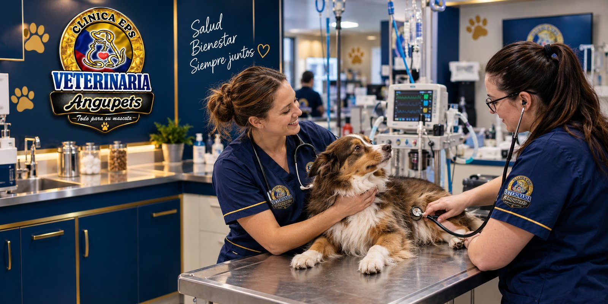
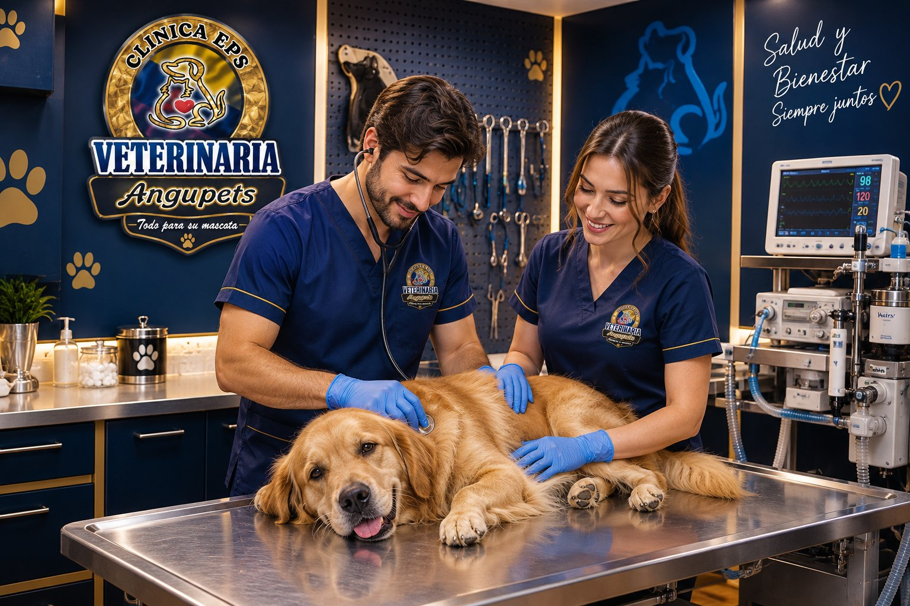
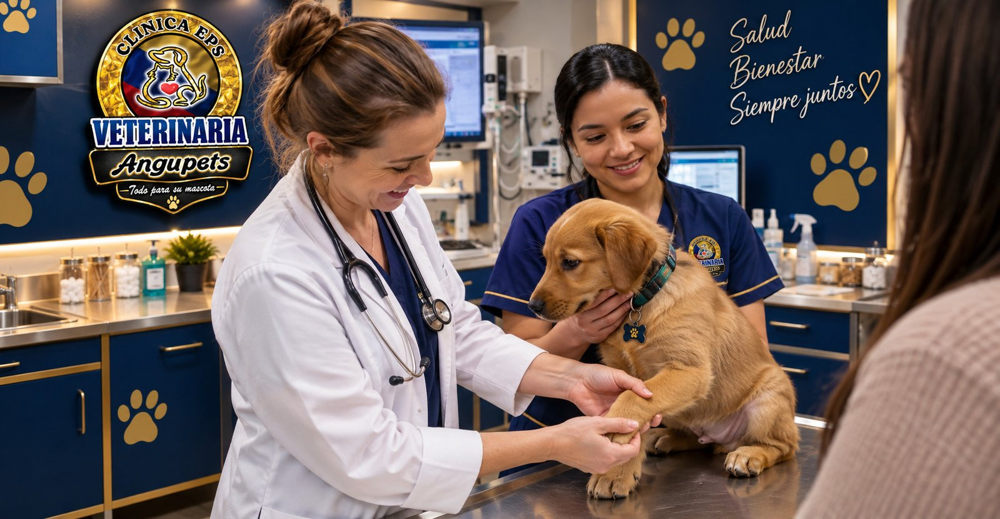

Urgencias veterinarias: 8 señales para ir a la clínica de inmediato
Dificultad para respirar, convulsiones, abdomen hinchado… aprende a reconocer las señales de emergencia en perros y gatos y qué hacer mientras llegas.

Esterilización de perros y gatos: qué esperar antes y después de la cirugía
Preparación, ayuno, cuidados de la herida y señales de alerta en la recuperación de una esterilización. Guía práctica para tutores.

Exámenes de laboratorio para tu mascota: cuándo pedirlos y qué revelan
Hemograma, química sanguínea, parcial de orina y coprológico: para qué sirve cada examen y en qué momentos conviene hacerlos.
Chocolate, dulces y otros alimentos peligrosos para perros y gatos
Chocolate, xilitol, uvas, cebolla y más: qué alimentos pueden intoxicar a tu mascota y cómo actuar si los comió. Útil en fiestas y temporadas de dulces.
Peluquería canina: cada cuánto bañar a tu perro y cómo cuidar su piel
Frecuencia de baño, cepillado, corte según la raza y señales en la piel que requieren consulta veterinaria.
Guardería canina: cómo saber si tu perro está listo y cómo prepararlo
Vacunas al día, socialización y qué llevar: una guía para que la primera experiencia de tu perro en guardería sea positiva.
Aún no hay artículos en este tema.